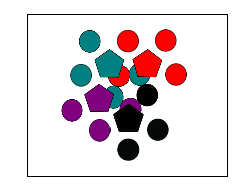

If we try to repeat the process with a five fold lattice then it should be clear that you do not form an overlayed lattice. The same applies to every point group other than those with 2,3,4 and 6 fold symmetries. This is why in crystallography we are limited to these symmetries.
